入社1ヶ月：新人研修【座学での一斉研修／Off-JT】
問診、検査、基本手技、物療、院内ルールを学びます。
まずは、現場に入る前の基礎を整理します。
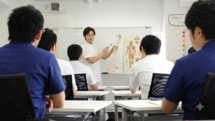
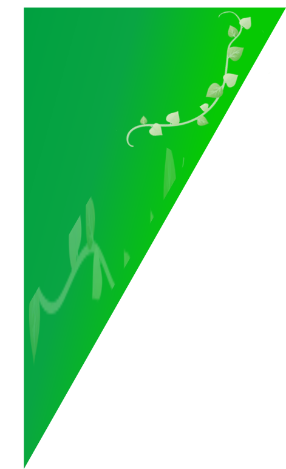
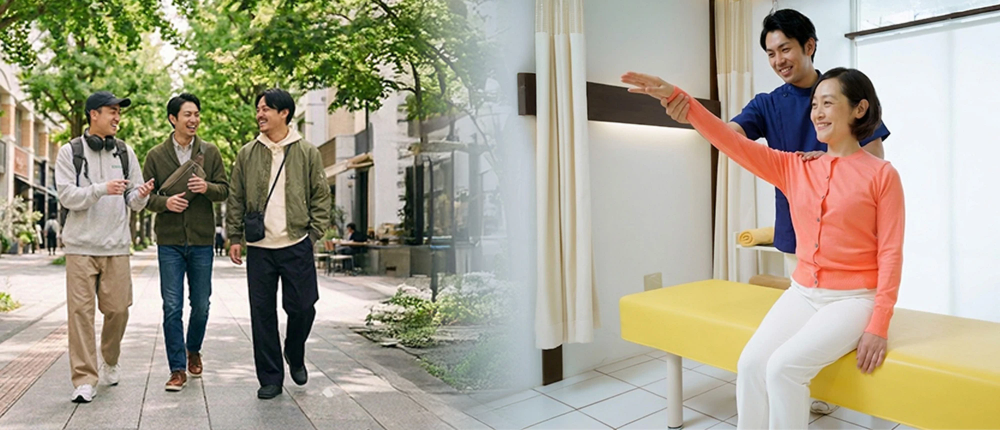
私たちが大切にしているのは、
「スタッフが幸せでないと、患者さんを幸せにできない」
という考え方です。
患者さんを本気でよくする技術は、しっかり教えます。
だから、しっかり覚えてもらいます。
その一方で、施術者自身の生活も大切にできるように、
◎日曜・木曜休み、
◎17:30に帰れる日、
◎夜間・休日のトレーナー活動なし、
◎無理な残業なし
の働き方を整えています。
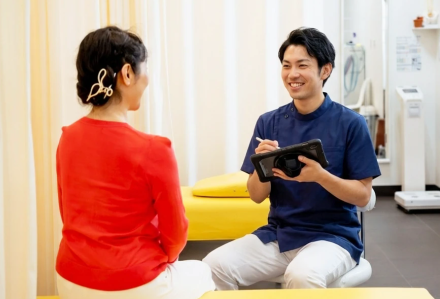
整骨院で働きたい。
「患者さんをよくできる技術を身につけたい。」
でも、就職先を考えると、こんな不安を感じる人もいるはずです。
✔︎就職したら、毎日決まった時間に帰れるのかな。
✔︎休みの日まで仕事が入ることはないのかな。
✔︎練習やミーティングで、夜遅くならないかな。
✔︎技術は一から教えてもらえるのかな。
✔︎ただマッサージをするだけで終わらないかな。
✔︎この職場で、自分はちゃんと成長できるのかな。
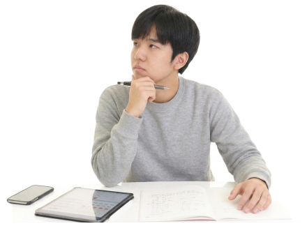
本当は、患者さんをよくしたい。
本当は、もっと学びたい。
本当は、施術者として誇りを持てる仕事がしたい。でも同時に、自分の生活も大切にしたい。
その気持ちは、わがままではありません。
患者さんをよくする技術を学ぶことと、
施術者自身が幸せに働くことは、両立できると考えています。
アザースで目指しているのは、
「ただ定時に帰れる職場」ではありません。
患者さんをよくする技術を身につけ、自分の仕事に誇りを持ち、それでいて、自分の生活も大切にできる働き方です。
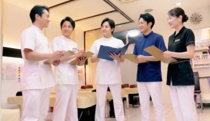
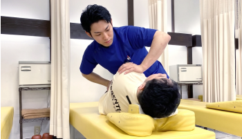
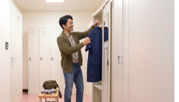
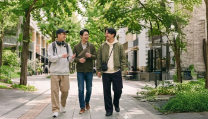
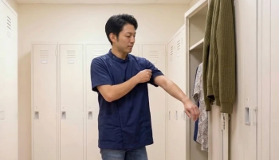
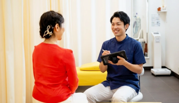
夜間・休日のトレーナー活動なし
強制的な居残り練習なし
夜の院内ミーティングなし
無理な残業なし
技術を学ぶことと、自分の人生を大切にすること。
その両方をあきらめない働き方を、アザースは追求しています。
アザースが提供するのは、単なるマッサージ技術ではありません。
私たちが目指しているのは、患者さんの症状だけでなく、その人の生活を支える施術です。
痛みで歩けなかった人が、もう一度外に出られるようになる。
スポーツをあきらめかけた学生が、また競技に戻れるようになる。
仕事や家事がつらかった人が、日常生活を取り戻していく。
そのために必要なのは、ただ手を動かす技術ではありません。
なぜ痛みが出ているのかを見極める力
身体の状態を正しく評価する力
患者さんにわかりやすく説明する力
必要な施術を選択する力
安心して任せてもらえる人間性
患者さんを本当によくするための技術は、簡単には身につきません。
だからこそ、アザースでは基礎から段階的に学ぶ仕組みを用意しています。
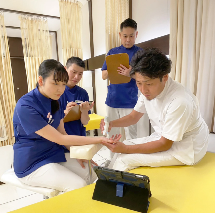
治せる技術を学び、施術を任されるようになるまで
問診、検査、基本手技、物療、院内ルールを学びます。
まずは、現場に入る前の基礎を整理します。

患者対応、初診問診、施術の流れ、先輩からのフィードバックを通して、実際の現場で学びます。
いきなり一人で抱え込むのではなく、先輩の指導を受けながら段階的に成長していきます。
外傷対応、評価、固定、自費診療、説明力を深めます。
患者さんの状態を見極め、必要な施術を考えられる施術者を目指します。
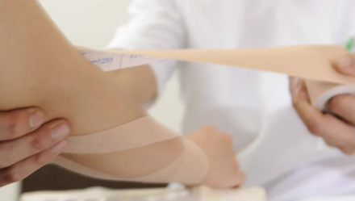
後輩指導、院運営、数字の見方、院長・マネージャーとしての成長を目指します。
施術者としてだけでなく、チームや院を育てる力も身につけていきます。
整骨院ビジネスを身につけて成功したい方
患者さんをよくするために、手技技術を本気で学びたい方
教わったことを素直に受け止め、まず行動に移せる方
自分の成長だけでなく、チームや院の成長にも関わりたい方
「楽に働きたい」だけではなく、「技術も働き方も大切にしたい」と考える方
将来的に、後輩育成や院運営にも関心がある方
「決められた作業だけを淡々とこなしたい」
「技術習得やフィードバックより、時間通りに働くことだけを優先したい」
という方には、アザースの環境は合わないかもしれません。
アザースは、働き方を大切にしています。
しかし、それは「楽をするため」ではありません。
患者さんをよくする技術を身につけ、施術者として成長するために、安心して学べる環境を整えているという意味です。
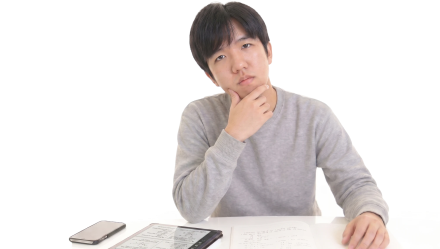
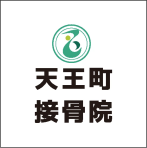
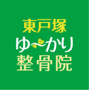
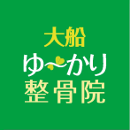
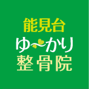
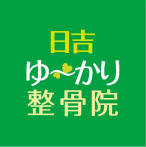
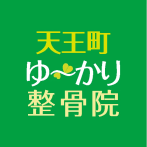
2026年4月入社 帝京平成大学卒 柔道整復師 k.Y先生
コメントコメントここコメントコメントここコメントコメントここコメントコメントここコメントコメントここコメントコメントここコメントコメントここコメントコメントここコメントコメントここコメントコメントここコメントコメントここコメントコメントここコメントコメントここコメントコメントここコメントコメントここコメントコメントここコメントコメントここコメントコメントここコメントコメントここコメントコメントここコメントコメントここコメントコメントここコメントコメントここコメントコメントここコメントコメントここコメントコメントここコメントコメントここコメントコメントここ
コメントコメントここコメントコメントここコメントコメントここコメントコメントここコメントコメントここコメントコメントここコメントコメントここコメントコメントここコメントコメントここコメントコメントここコメントコメントここコメントコメントここコメントコメントここコメントコメントここコメントコメントここコメントコメントここコメントコメントここコメントコメントここコメントコメントここコメントコメントここ
2018年4月入社 呉竹鍼灸柔整専門学校 柔道整復師 M.K先生
コメントコメントここコメントコメントここコメントコメントここコメントコメントここコメントコメントここコメントコメントここコメントコメントここコメントコメントここコメントコメントここコメントコメントここコメントコメントここコメントコメントここコメントコメントここコメントコメントここコメントコメントここコメントコメントここコメントコメントここコメントコメントここコメントコメントここコメントコメントここコメントコメントここコメントコメントここコメントコメントここコメントコメントここコメントコメントここコメコメントコメントここコメントコメントここコメントコメン
コメントコメントここコメントコメントここコメントコメントここコメントコメントここコメントコメントここコメントコメントここコメントコメントここコメントコメントここコメントコメントここコメントコメントここコメントコメントここコメントコメントここコメントコメントここコメントコメントここコメントコメントここコメントコメントここコメントコメントここコメントコメントここコメントコメントここコメントコメントここ
ゆ〜かり整骨院株式会社アザースが 代表 田辺健児
私たちアザースが大切にしているのは、ただ施術を提供することではありません。
痛みで歩けなかった人が、もう一度外に出られるようになる。
スポーツをあきらめかけた学生が、また競技に戻れるようになる。
仕事や家事がつらかった人が、日常生活を取り戻していく。
私たちが向き合っているのは、症状だけではなく、その人の生活そのものです。
患者さんを本当によくするために必要なのは、「一応マッサージができます」というレベルの技術ではありません。
なぜ痛みが出ているのかを見極める力。
身体の状態を正しく評価する力。
患者さんにわかりやすく説明する力。
そして、安心して任せてもらえる人間性。
問診、評価、手技、外傷対応、固定、自費診療。
覚えることは多く、簡単には身につきません。
だからアザースでは、ガッツリ教えます。
その分、ガッツリ覚えてほしいと思っています。
新人のうちから、すべてを一人でできる必要はありません。
大切なのは、患者さんをよくしたいという気持ちを持つこと。
教わったことを素直に受け止めること。
練習し、考え、少しずつ自分の技術にしていくこと。
それが、施術者として成長するための土台になります。
会社ができることは、学べる環境を整えること。
つまずいたときに支えること。
安心して学び、挑戦できる環境をつくることです。
施術者が疲弊していては、患者さんを幸せにすることはできません。
日曜・木曜の休み。
17:30に帰れる日。
夜間・休日のトレーナー活動なし。
強制的な居残り練習なし。
夜の院内ミーティングなし。
無理な残業なし。
技術を磨きながら、自分の生活も大切にできる働き方を、私たちは追求しています。
アザースは、楽な職場を目指しているわけではありません。
目指しているのは、誇りを持てる職場です。
本気で技術を身につけ、患者さんから必要とされ、自分の仕事に誇りを持てる施術者を育てる会社です。
患者さんの身体をよくすること。
患者さんの日常を支えること。
そして、自分自身も幸せに働ける施術者になること。
アザースで、患者さんから選ばれる施術者を一緒に目指していきましょう。
神奈川・横浜エリアで整骨院の就職先を就職先を考えるとき、給与や休日、研修内容を見ることはもちろん大切です。
でも、それだけではわからないこともあります。
どんなスタッフが働いているのか。
患者さんとどんな距離感で関わっているのか。
院の空気は自分に合いそうか。
ここで働く自分を、少しでも想像できるか。
だからこそ、まずは見学に来てください。
診療の現場を見てください。
実際に働いているスタッフと、直接話してみてください。
パンフレットや求人票だけでは伝わらない、現場の雰囲気を感じてほしいと思っています。
就職を考えるうえで、
「ここなら頑張れそう」
「この人たちと働いてみたい」
と思える感覚は、とても大切です。
その感覚を、ぜひ自分の目で確かめに来てください。
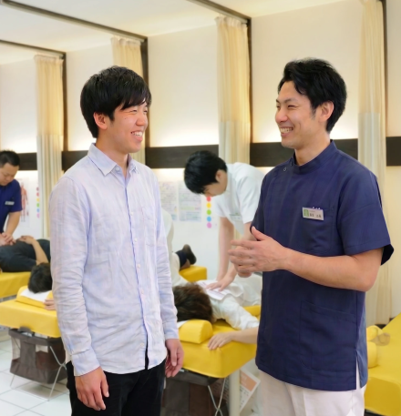